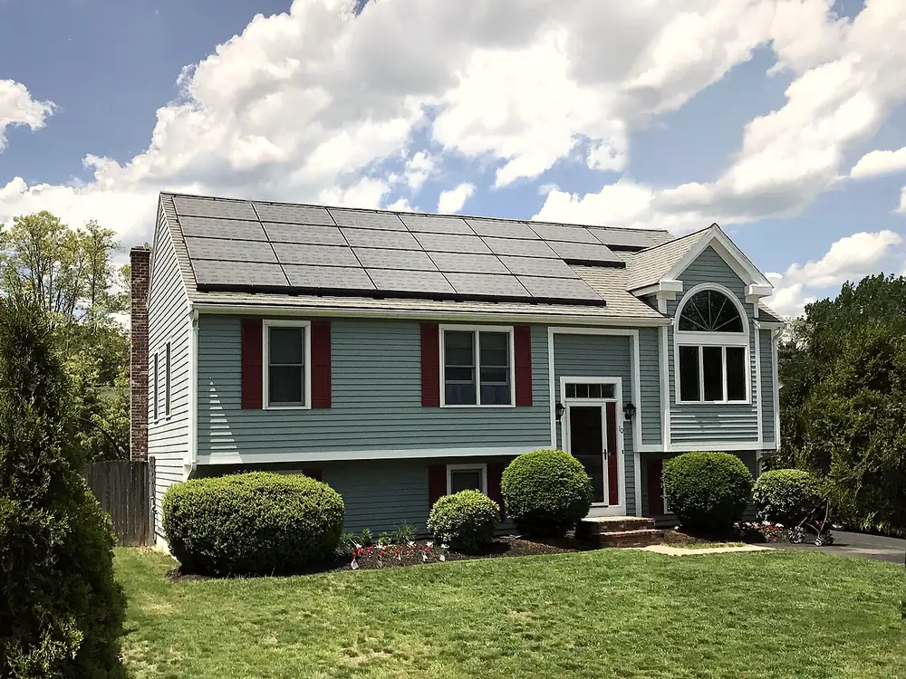
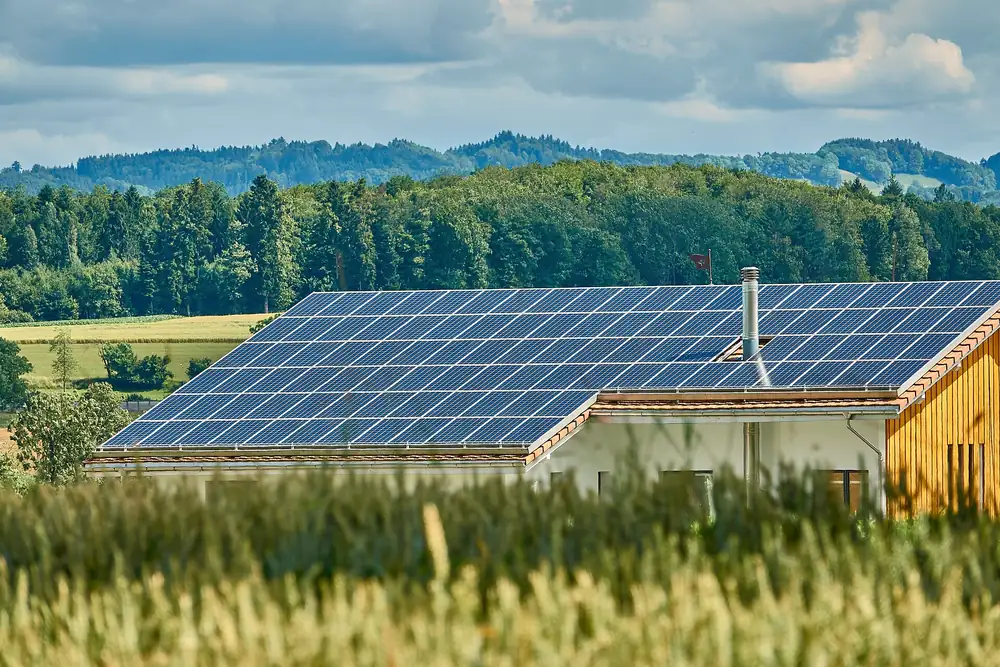
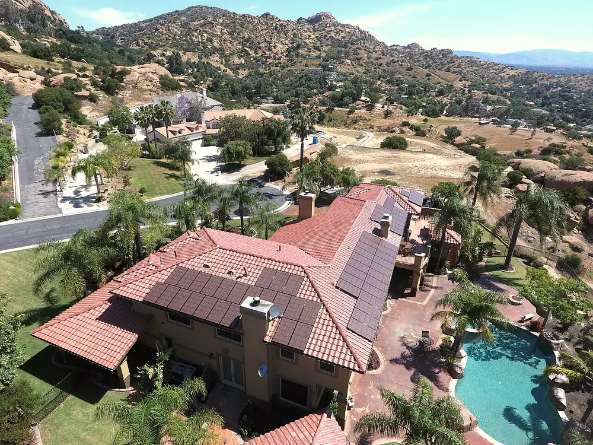
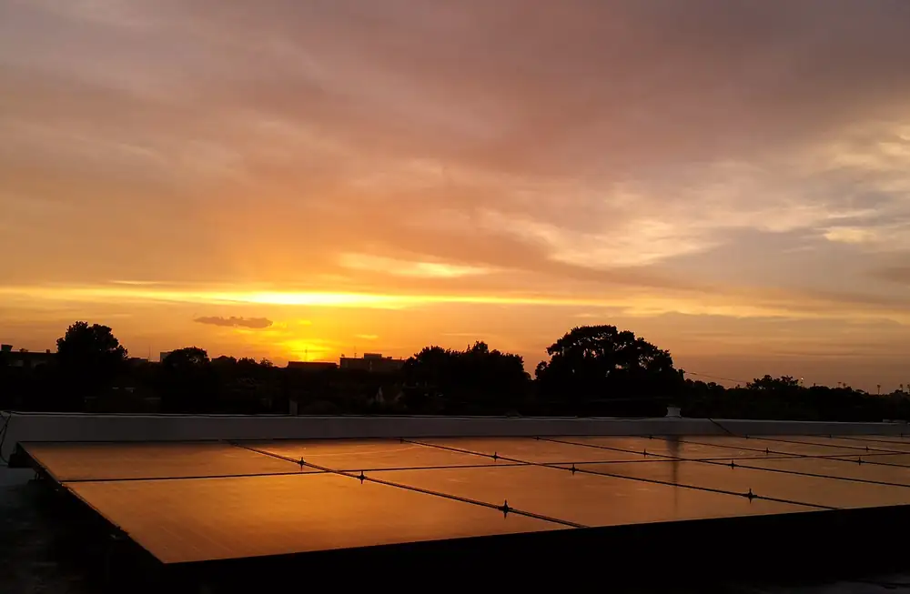
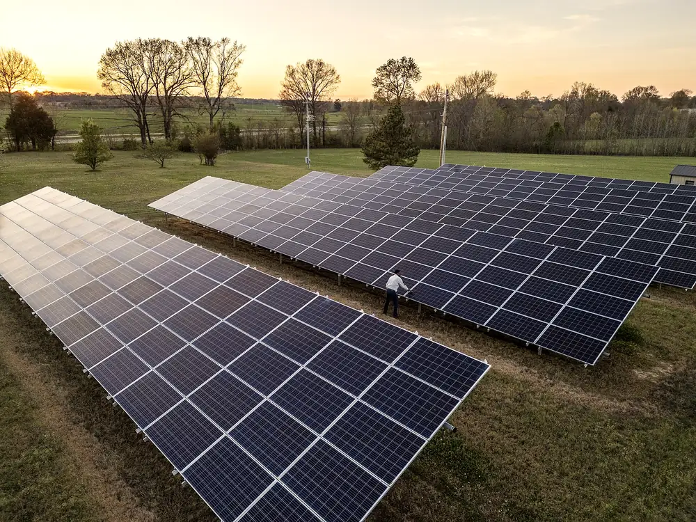
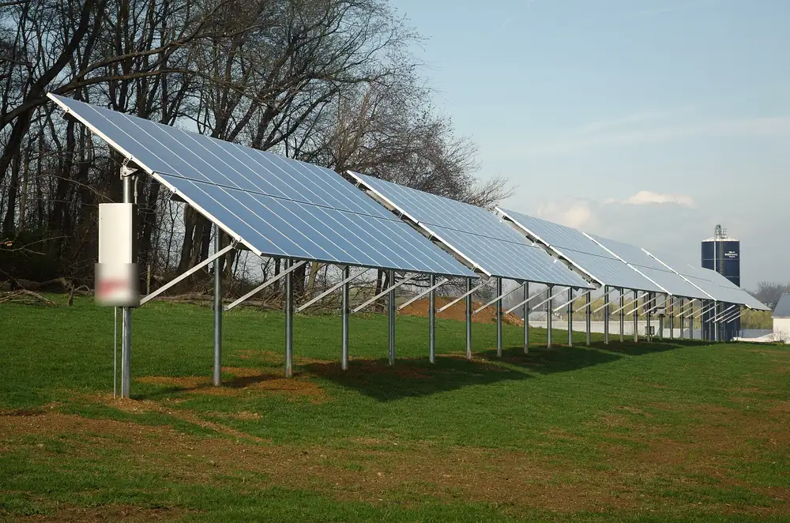
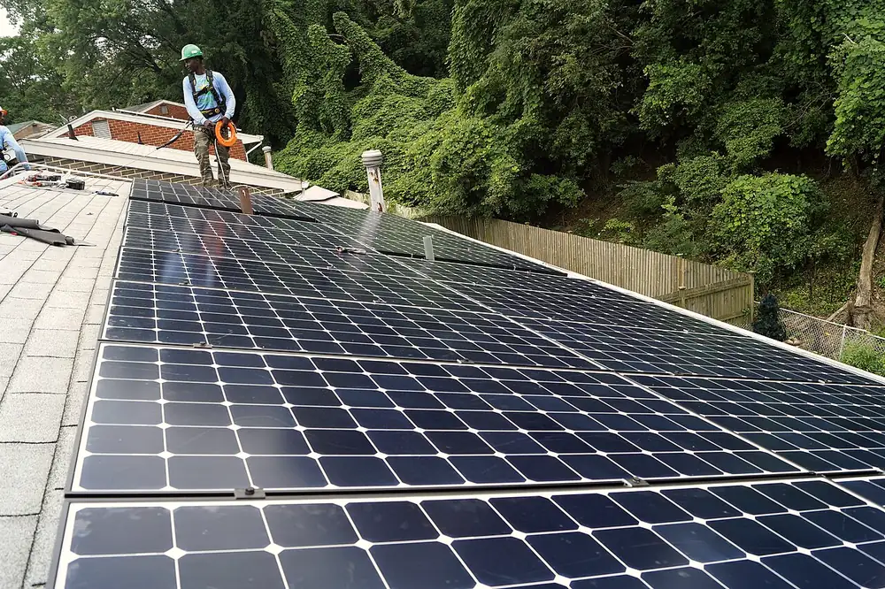
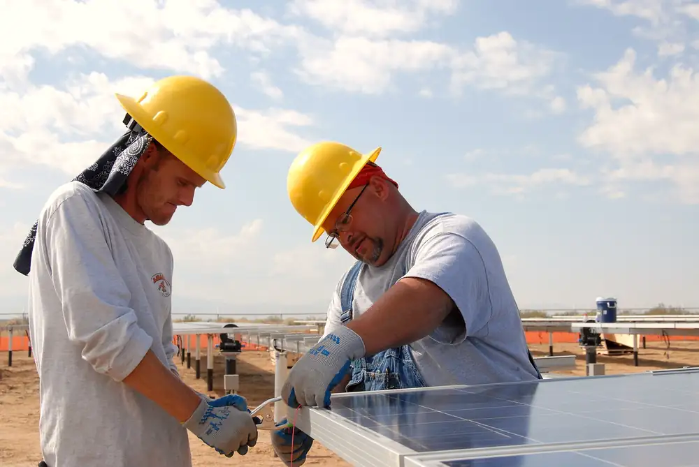

Sample projectRuns: the whole house except the geyser and oven during an outage
Finished jobs
Every project here is a sample for this demo: real stock photos, made-up jobs. Tap one for the full spec.

Sample projectRuns: the whole house except the geyser and oven during an outage

Sample projectRuns: house, borehole pump, cold room and workshop with no grid connection
 Sample project
Sample projectRuns: daytime load: pool pump, aircon and home office

Sample projectRuns: pool pump, kitchen, two offices and the gate through most outages

Sample projectRuns: fridges, pumps and daytime appliances

Sample projectRuns: farmhouse, irrigation pump and packing shed
 Sample project
Sample projectRuns: house lights, fridges, borehole and outdoor security lights all night

Sample projectRuns: lights, Wi-Fi, fridge, TV and gate

Sample projectRuns: lights, Wi-Fi, fridge, TV, laptops and the alarm

Tell us your bill and roof. We call within one working day and book a site visit.